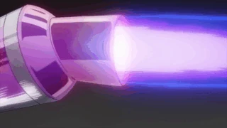

Su informacion principal
Nombre: Tenya Iida

Quirk: Motor
El Don de Tenya se manifiesta en forma de motores de automóviles en cada una de sus pantorrillas, lo que le otorga una gran velocidad y un poder de patada extremo.
Wiki con informacion mas detallada de Iida